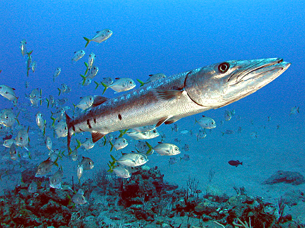

|  | BarracudaA barracuda, or cuda for short, is a large, predatory, ray-finned fish known for its fearsome appearance and ferocious behaviour. The barracuda is a saltwater fish of the genus Sphyraena, the only genus in the family Sphyraenidae which was named by Constantine Samuel Rafinesque in 1815.[2] It is found in tropical and subtropical oceans worldwide ranging from the eastern border of the Atlantic Ocean to the Red Sea, on its western border the Caribbean Sea, and in tropical areas of the Pacific Ocean. Barracudas reside near the top of the water and near coral reefs and sea grasses.[3] Barracudas are targeted by sport-fishing enthusiasts |
My website look
How nice the site looks like
Work experience
| Year | Work |
|---|---|
| 2011 | Trainer |
| 2014 | Monitor |